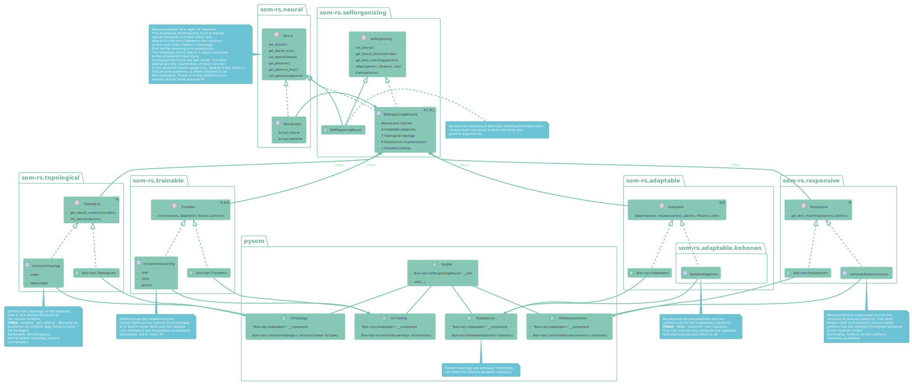

Expand description

Naming convenctions
- traits: Start with capital letter and are adjectives
- structs: Start with capital letter and are substantives
use som_rs::default::*;
use som_rs::{NeuralLayer, Neurons, SelfOrganizing};
fn main() {
println!("Hello, SOM!");
let seed = 42;
let mut rng = Isaac64Rng::seed_from_u64(seed);
let mut som = NeuralLayer {
neurons: Neurons {
// lateral: Array2::<f64>::zeros((0,0)),
patterns: Array::random_using((100, 3), Uniform::new(0., 10.), &mut rng),
..Default::default()
},
adaptivity: KohonenAdaptivity {},
topology: CartesianTopology::new((10, 10)),
responsiveness: CartesianResponsiveness {},
training: BatchTraining {
radii: (2.0, 0.2),
rates: (0.7, 0.1),
epochs: 1,
},
};
println!("{}", som.neurons.lateral);
som.init_lateral();
let training = Array::random_using((5000, 2), Uniform::new(0., 9.), &mut rng);
som.train(&training);
som.adapt(&training.row(0), 0.7, 0.7);
}Re-exports
pub use neural::Neural;pub use neural::NeuralLayer;pub use selforganizing::BoxedSelforganizing;pub use selforganizing::Selforganizing;pub use selforganizing::SelforganizingNetwork;pub use adaptable::Adaptable;pub use adaptable::BoxedAdaptable;pub use responsive::BoxedResponsive;pub use responsive::Responsive;pub use topological::BoxedTopological;pub use topological::Topological;pub use trainable::BoxedTrainable;pub use trainable::Trainable;
Modules
- This module defines extensions to the ndarray crate. General functions are defined in the top-level